Description
ByteBud is a web application inspired by Discord that allows users to create servers where they can interact in real time with other users in their communities. This project aims to replicate Discord's ease of use and the ability to share content with other ByteBud clients running at the same time instantaneously through the use of WebSockets. The app is built with a Python/Flask backend and a React/Redux frontend for responsiveness.
Technologies



Approach
- Database level authentication to keep messaging, servers, channels private
- Utilize websockets with Socket.io to implement real-time messaging in channels between members of the server of that channel
- Develop backend using Flask as framework to allow for flexibility and simplicity while scaling app
- RESTful API endpoints for Create, Read, Update, and Delete operations for users, friends, servers, channels, messages, and reaction